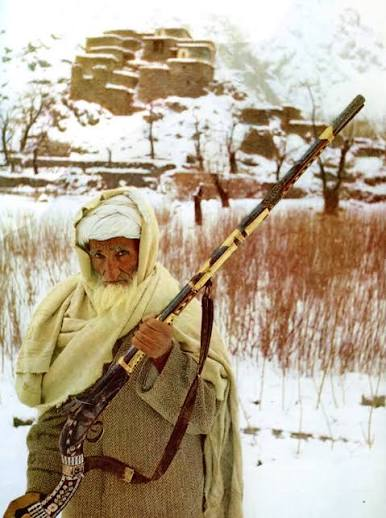

Muskets & Jezails of the Anglo-Sikh Wars (1845–1849)


Title: Muskets & Jezails of the Anglo-Sikh Wars
Category: Religious Corner
Artist: Historical Artefact
Year: 1845 – 1849
Category: Religious Corner
Artist: Historical Artefact
Year: 1845 – 1849
MUSKETS & JEZAILS OF THE ANGLO-SIKH WARS (1845–1849)
The long-barreled firearms displayed here are representative of the muskets and jezails used during the Anglo-Sikh Wars between the Sikh Empire and the British East India Company.
Historical Context:
The Khalsa Army under Maharaja Ranjit Singh was modernized with European military techniques, yet retained traditional weaponry. By the 1840s, Sikh infantry were equipped with a mix of locally made matchlocks, flintlocks, and captured British Brown Bess muskets.
Features & Use:
• Jezail: The long, heavy-barreled rifles were common in Punjab and the North-West Frontier. Known for exceptional range and accuracy, they could outshoot standard British muskets in skilled hands.
• Craftsmanship: These firearms were often custom-made with wooden stocks, iron barrels, and intricate brass or bone inlay. Many were produced in Lahore, Amritsar, and Gujranwala — major arms centers of the Sikh Empire.
• Battlefield Role: Sikh musketeers formed the backbone of the infantry during key battles like Mudki, Ferozeshah, Aliwal, Sobraon, and Chillianwala. The weapons' long range allowed the Khalsa to inflict heavy casualties on advancing British columns.
Legacy:
These rifles symbolize the skill of Punjabi gunsmiths and the courage of Khalsa soldiers who faced one of the world's most powerful empires. Though outgunned in artillery, the Sikh infantry's marksmanship was respected by British officers and remains a proud part of Sikh martial history.
The long-barreled firearms displayed here are representative of the muskets and jezails used during the Anglo-Sikh Wars between the Sikh Empire and the British East India Company.
Historical Context:
The Khalsa Army under Maharaja Ranjit Singh was modernized with European military techniques, yet retained traditional weaponry. By the 1840s, Sikh infantry were equipped with a mix of locally made matchlocks, flintlocks, and captured British Brown Bess muskets.
Features & Use:
• Jezail: The long, heavy-barreled rifles were common in Punjab and the North-West Frontier. Known for exceptional range and accuracy, they could outshoot standard British muskets in skilled hands.
• Craftsmanship: These firearms were often custom-made with wooden stocks, iron barrels, and intricate brass or bone inlay. Many were produced in Lahore, Amritsar, and Gujranwala — major arms centers of the Sikh Empire.
• Battlefield Role: Sikh musketeers formed the backbone of the infantry during key battles like Mudki, Ferozeshah, Aliwal, Sobraon, and Chillianwala. The weapons' long range allowed the Khalsa to inflict heavy casualties on advancing British columns.
Legacy:
These rifles symbolize the skill of Punjabi gunsmiths and the courage of Khalsa soldiers who faced one of the world's most powerful empires. Though outgunned in artillery, the Sikh infantry's marksmanship was respected by British officers and remains a proud part of Sikh martial history.
Open on Mobile
Scan to view this art record in Chrome on your phone.